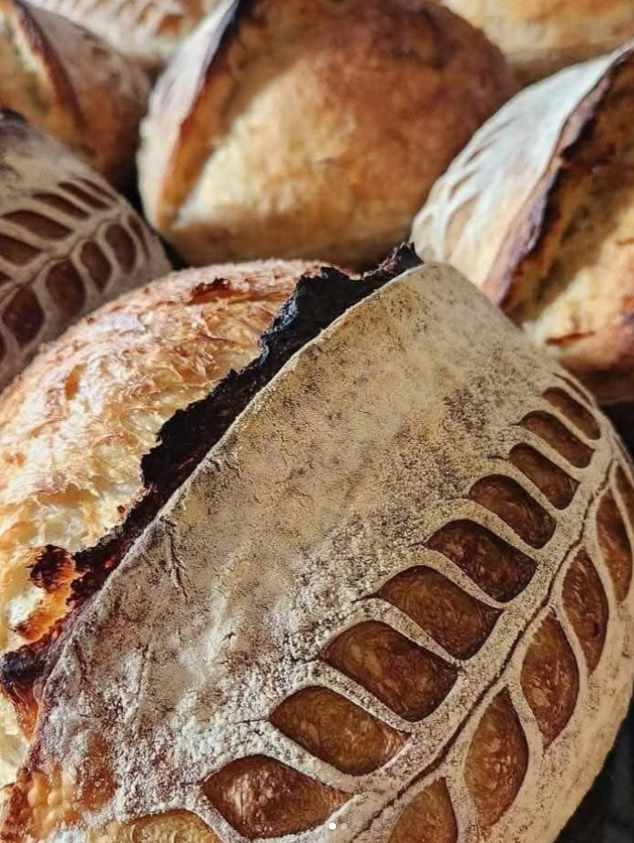
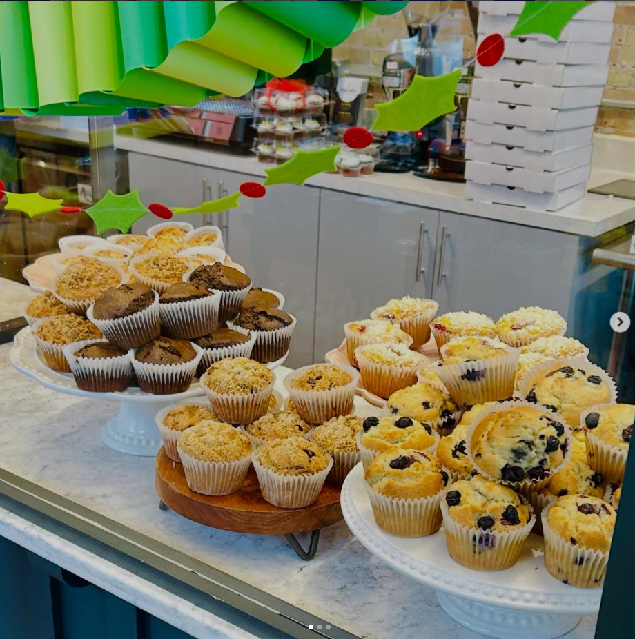
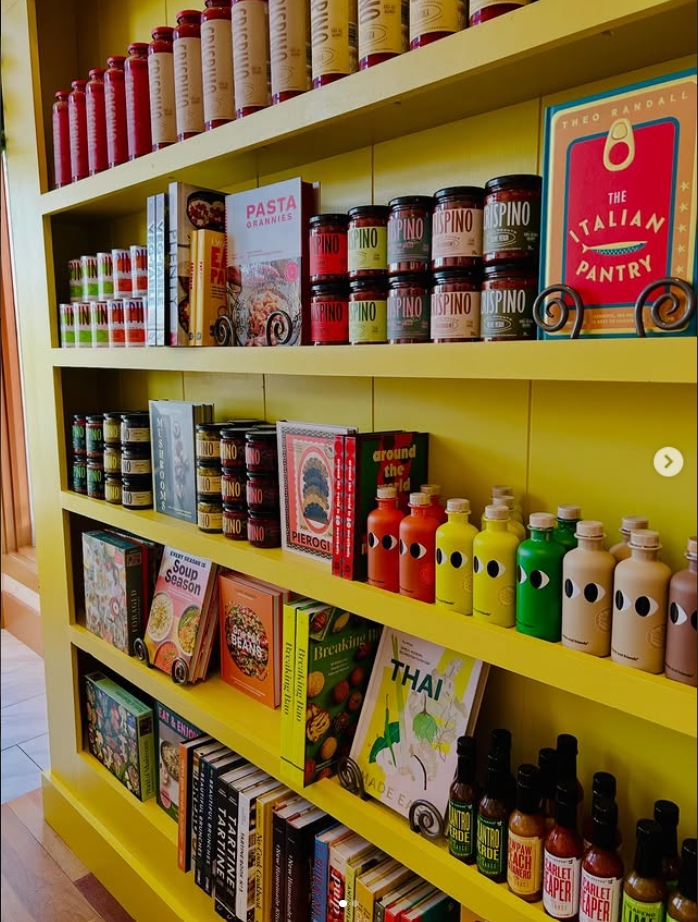
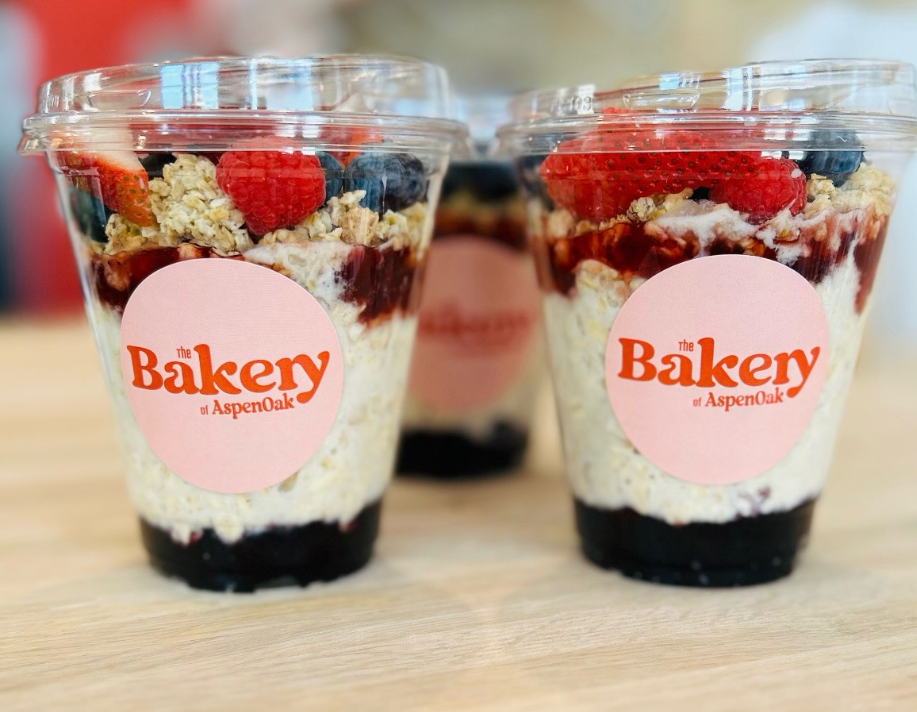
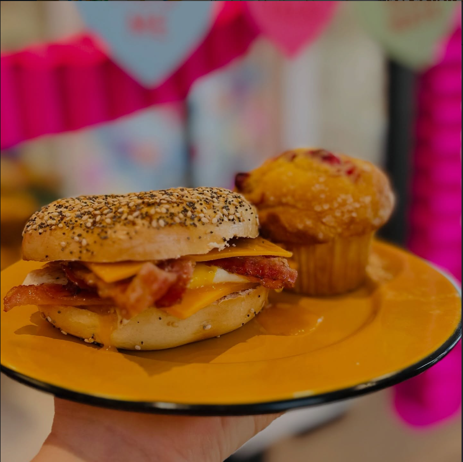

Artisan breads, fresh pastries, specialty coffee, and a curated pantry — all in the heart of downtown Sheboygan.


What we do
Sourdough, muffins, bagels, dirt cake cups & seasonal sweets baked fresh daily
Espresso, drip coffee, chai lattes, tepache refreshers & rotating seasonal specials
Curated hot sauces, specialty condiments & hard-to-find local products
Hand-picked titles for home cooks and food lovers — always rotating



What people are saying
I love this store and bakery so much!! Their window display and seasonal decor is always full of joy and color. They have an excellent selection of cookbooks, puzzles, and other lovely home goods! And their bagel sandwiches? Ugh! Simply the best. Sometimes they sell baked goods for a portion of the profit to go to a local cause, like the warming shelter or schools. ♥️ Right across from the library!
Their muffins aren't everything but they're way ahead of whatever's in second place! Lots of full size blackberries in the Blackberry Muffins!! It's wonderful to see these kids renovate a piece of history and turn it into a terrific coffee shop. Way to go ladies. You knocked it out of the park.
If you want delicious organic sourdough bread and yummy desserts, this is the place to shop.
Absolutely incredible service every single time I go in. The food is amazing and it is so fun seeing all the new stuff come in. One of my favorite places in town, definitely recommend coming in a few times to give a little bit of everything a try!